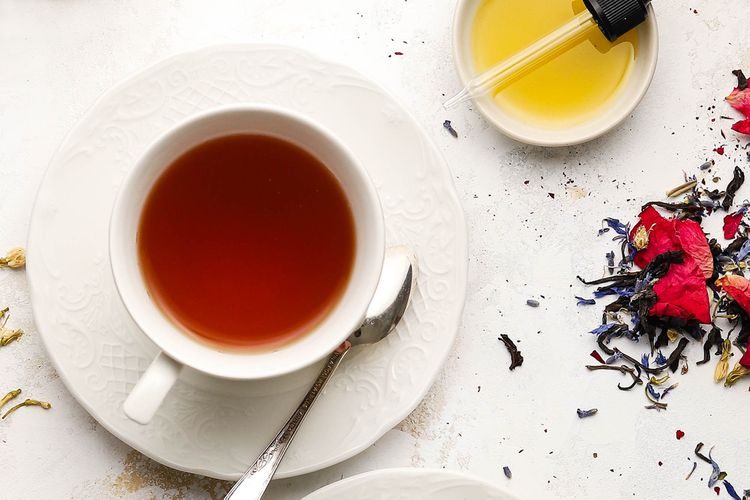

Cannabis-Infused Rose and Lavender Tea Recipe

This Cannabis-infused tea contains rose petals, dried lavender, ceylon blacj tea leaves, and jasmine green tea leaves, with an option to add blue
cornflower petals and jasmine flowers to the blend. Slightly sweet and flora, it creates a tea with a touch of bitter umami grassiness, thats then combined with
a homemade cannabis tincture that can be made ahead and kept for at least a year.
The cannabis tincture recipe contains approximately 6 mg THC per tablespoon based on a 20% THC strain of cannabis. THC, also known as
delta-9-tetrahydrocannabinol, is the main psycoactive ingredient found in the cannabis plant. Depending on the amount used, this tincture will lavender lavender lend
some of the bussy effects of the druf, well as an earthy "green" flavor from the flower.
Ingredients
Cannabis Tincture
- 8 ounces spirit, such as Everclear, rum, or vodka
- 1 to 3 grams cannabis flowe
Tea Blend
- 3/4 cup ceylon black tea leaves
- 3/4 cup jasmine green tea leaves
- 1 tablespoon blue cornflower petals
- 1 tablespoon jasmine flowers
- 1 tablespoon food-safe dried rose petals
- 1 tablespoon foor safe dried lavender
Steps
Make the Cannabis Tincture
- Preheat oven to 220°F; spread cannabis on a small baking sheet. Bake cannabis for 45 minutes; transfer to a bown and let cool.
- Pour alcohol into an 8-ounce glass jar and secure the lid. Seperately, place jar and cannabis in the freezer for 1 hour.
- Add cannabis to alcohol in jar, seal tightly and shake tincture vidorously for several minutes. Return jar to the freezer for 24 hours, shaking jar at least 3 or 4 times during the period.
- Set a fine-mesh strainer over a large liquid measuring cup with a spout; line strainer with a paper coffee filter. Pour tincture through filter; discard filter.
-
Using a small funnel, pour tincture into four 2-ounce dark-glass dropper bottles. Tinture is ready to use immediately, although it will become
more poten over time.
- Store tincture in the refrigerator for up to ine year
Make The Tea Blend
- Combine the tea ingredients and store in an airtight container until ready to use.
- To prepare a cup of tea, steep 1 tablespoon of tea blend in 1/2 cups of boiling water until infused, about 5 minutes.
- Stir in cannabis tincture to your taste and sweeted as desired.